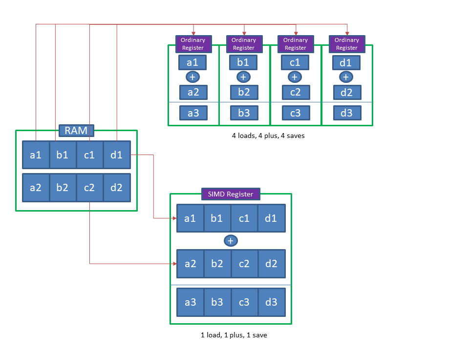

This section explore some C++ Vectorization method using AVX. Advanced Vector Extension (AVX) are extensions to the x86 instruction set architecture for microprocessors from Intel and AMD first supported by Intel with Sandy Bridge processr. It is a set of instruction to perform SIMD (Single Instruction Multiple Data).
Single instruction, multiple data (SIMD) is a class of parallel computers. It describes computers with multiple processing elements that perform the same operation on multiple data points simultaneously. Such machines exploit data level parallelism but not cocurrency. Compared with normal cmputation method, SIMD bundle data per packet (vectorization) and apply a single instruction on the whole data packet, therefore improves computational efficiency by apply the instruction only once. Here is an illustration, assume we have two double vectors and each vecor has four numbers \(V1 = (a_1, b_1, c_1, d_1)\) and \(V2 = (a_2, b_2, c_2, d_2)\) and we want to do an element summation of the two vectors. Below is an example of the code for using AVX (a SIMD method) and normal C++ array. Right hand side gives the assembly code
In AVX it start utilizing a new assembly method called \(vaddpd, vmovsd, vmovpd\) against the usual code using \(movsd, addsd\). The way how SIMD works is that in a normal CPU processor a single register load a single element and apply the calculation, while in an SIMD register the register will load multiple element and apply the calculation on all of them, therefore saves time on reading and loading from RAM onto register since RAM is slower than register. Here is a graph explaination. SIMD therfore improves efficiency by utilizing register calculation since register is much faster than RAM.
